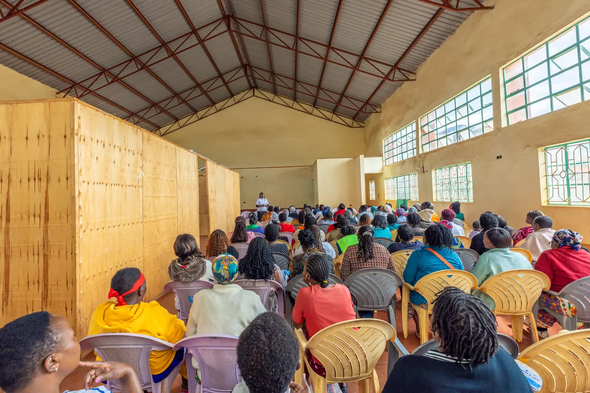

01
Increased income and profitability
Supporting women, entrepreneurs and farmers to strengthen income generation, manage costs and build more financially sustainable enterprises and livelihoods.
Our impact
At HerNext, impact is more than participation, activities or visibility. It is the meaningful change that our work helps create in people’s lives, enterprises and livelihoods.
We aim to understand the challenges, measure progress and use evidence to improve how opportunities are designed and delivered.
Our approach to impact
HerNext seeks to understand whether its programmes contribute to stronger enterprises, improved capabilities, better market connections and more sustainable livelihoods. We begin by listening and establishing a clear understanding of the starting point. We then identify relevant indicators, work with appropriate partners, track progress and use the findings to strengthen our approach.
We distinguish between activities delivered, outputs achieved and outcomes observed. We report results only when evidence is available and avoid attributing change to our work without a reasonable basis.
The outcomes we work towards
01
Supporting women, entrepreneurs and farmers to strengthen income generation, manage costs and build more financially sustainable enterprises and livelihoods.
02
Strengthening the knowledge, practices, tools and systems that can help people and enterprises use resources more effectively and improve performance.
03
Expanding connections to buyers, commercial partners and relevant domestic, regional and international market opportunities.
04
Supporting financial capability, investment readiness and connections to appropriate financial services and investment opportunities.
05
Building business capability, resilience, planning and the practical foundations needed for enterprises to sustain and grow.
06
Supporting more resilient economic activity and livelihoods that can withstand challenges and create longer term value.
07
Strengthening practical, technical, vocational, digital, entrepreneurial and leadership capabilities that help women and young people participate meaningfully in the economy.
How we measure impact
HerNext aims to use proportionate, programme-specific monitoring, evaluation and learning. Depending on the programme, this may include baseline information, participant and enterprise records, follow-up assessments, partner feedback and documented evidence of progress.
Enterprise development
Revenue, profitability, business continuity, jobs and enterprise growth.
Agriculture and livestock
Input and feed costs, production, productivity, mortality where relevant, feeding-practice adoption and farmer income.
Skills and employability
Skills acquired, completion, practical competency, progression to employment or enterprise and use of skills.
Markets and trade
Buyer connections, market entry, sales activity, commercial agreements and export opportunities converted into business.
Finance
Financial capability, investment readiness, access to appropriate financial services and finance secured where verified.
Inclusion and participation
Participation by women and young people, leadership opportunities and access to programme benefits.
Indicators are selected according to each programme’s objectives and data that can be collected responsibly. HerNext seeks to protect participant information and report findings accurately.
Impact across our programmes
Each HerNext programme has its own objectives and indicators, while contributing to our wider commitment to inclusive economic opportunity.
Women and Enterprise Development
Enterprise capability, business performance, income and resilience.
Youth Skills and Employability
Skills gained, practical competency and pathways to employment or entrepreneurship.
Skills, TVET and Industry Partnerships
Relevance of training, industry engagement and progression from learning to work or enterprise.
Agriculture and Farmer Development
Adoption of improved practices, productivity, input costs, market participation and farmer livelihoods.
Animal Nutrition and Feed Systems
Feeding-practice adoption, feed and input costs, livestock productivity and farmer outcomes, where reliable data can be collected.
Trade and Market Access
Buyer engagement, market connections, commercial opportunities and verified business generated.
These are intended measurement areas, not claims of results already achieved. Specific indicators will be confirmed for each programme.

Impact in action
Emerging case study, Kiambu. Through community-level engagement in Kiambu, HerNext has been exploring the experiences and needs of farmers involved in livestock enterprises, including dairy and poultry. This engagement has helped identify questions around animal-feed affordability, access to reliable inputs and the practical knowledge farmers need to manage their enterprises.
The learning is informing the development of a targeted agriculture and livestock response and the identification of appropriate technical, commercial and development partners. The next step is to establish suitable baseline information and define how progress will be measured.
This is an emerging case study about listening, learning and programme development. It should not be presented as evidence of improved income, productivity or other outcomes until follow-up data supports those claims.
Our commitment to evidence
No figure appears on this page until follow-up measurement supports it.
We are committed to reporting responsibly, learning from experience and being transparent about what is known, what is still being tested and what needs to improve. Credible impact takes time, consistent measurement and a willingness to learn.
Partner with HerNext
Whether you bring technical expertise, funding, research, market connections, training or implementation capacity, we welcome partnerships that help turn practical action into meaningful and measurable outcomes.